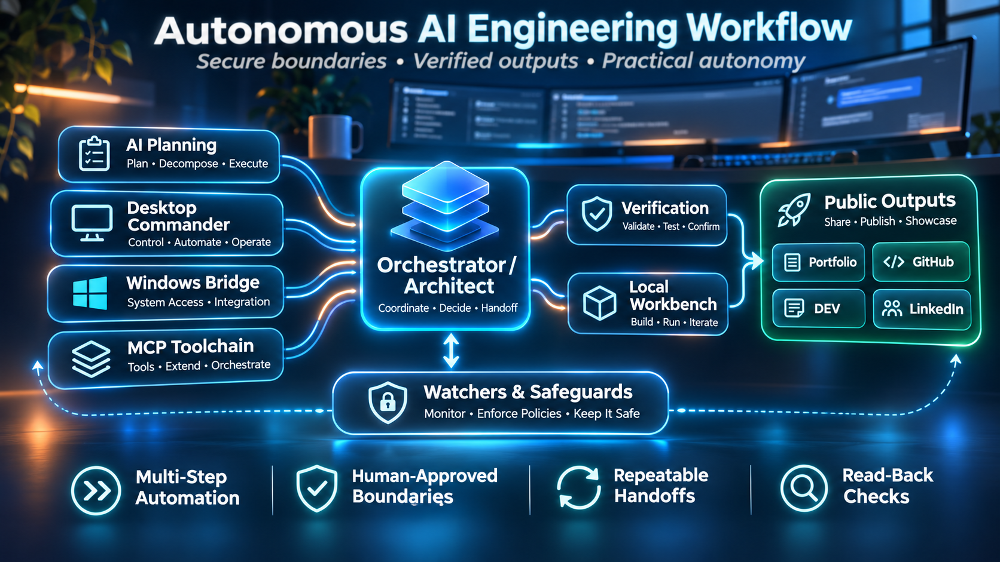

01 · The engineering challenge
AI-assisted development often fails at the boundaries between capable tools: a model produces a plausible answer, but the file is not on the target machine; a browser is open, but in the wrong Windows session; an agent finishes its task, but no one independently checks the result.
The design goal was not an unlimited self-running agent. It was a repeatable, operator-directed workflow that reads existing evidence, chooses the least intrusive available tool, runs within explicit permissions and returns verifiable artifacts.
02 · Responsibility and orchestration
The human principal defines objectives and approves decisions that require authority. ChatGPT serves as architecture coordinator, integrator and quality reviewer during an active work cycle. Deterministic work stays with PowerShell, existing gateways and verifiable scripts. Claude Code may be used as one scoped implementation specialist where it adds measurable value. Codex, Poracode and other multi-agent experiments remain separated or paused unless independently authorised.
This separation matters: a language model should not silently turn a suggested plan into broad production permissions. One writer, clear scope, explicit checkpoints and independent read-back make the system understandable.
03 · Engineering layers
Planning and context: task interpretation, applicable project runbooks, checkpoints and protected FINAL-GRÜN baselines; decisions are grounded in the latest evidence instead of re-running old tests.
Execution connectivity: Desktop Commander connects an authorised Windows development machine to the active chat. PowerShell, CLI and Git handle deterministic operations; a narrowly scoped Windows GUI bridge is used only when an authenticated application interface is genuinely required.
Purpose-built MCPs and workbench: Playwright, browser diagnostics, a workflow-specific MCP and WordPress/REST gateways provide specialised capabilities. The existing TangoKunstWerk workbench is a maintained project environment, not a generic unrestricted executor.
Supervision and recovery: network-aware boot checks, limited retry mechanisms, session eligibility preflights and a bounded local autonomy guard cover known operational faults. Presence checks are not equivalent to a fully autonomous long-running watchdog for every failure mode.
Quality and release: checksums, content-level tests, browser views, non-destructive regression evidence and publication approval boundaries. The expected destination must be independently read back before completion is claimed.

04 · End-to-end operating cycle
1. Understand the request. Establish the target, authorised scope, output, privacy requirements and whether publication approval applies.
2. Read the latest state. Retrieve existing runbooks and FINAL-GRÜN checkpoints; preserve completed decisions.
3. Choose the cheapest safe route. Prefer deterministic CLI or native file actions. Use the existing authenticated GUI bridge only when necessary.
4. Execute narrowly. One writer, relevant project boundary, no added privileges or hidden subscription requirements.
5. Observe actual results. Retrieve process status, file bytes, application feedback and error reports rather than inferring success from a command.
6. Repair with evidence. Diagnose an encountered failure, apply a scoped correction and retest only the affected path.
7. Verify independently. Compare hashes, inspect artifacts and check desktop/mobile behaviour as appropriate.
8. Release only with approval. Public changes follow explicit version-specific authorisation. Write a durable handoff with the real outcome and limits.

05 · The observed evidence
A 10/10 isolated integration check validated the limited local orchestration chain, a sandbox write/read-back, a safe-stop outside the allowed folder and an existing project gateway handoff. This was not a production WordPress-write test.
The remote engineering connection was verified after an actual PC restart, with Desktop Commander online before interactive Windows sign-in. Separate checks validated the Windows GUI eligibility route; not every state or session type is claimed to behave identically.
A real 3,126,843-byte evidence archive was downloaded through the authorised platform interface, copied to its destination and independently checked against SHA-256 and all eight ZIP entries. A native download avoided a bespoke text-block transport.
The public portfolio change was subsequently published through an approved release path and checked via repository read-back and live HTTPS. Responsive browser verification covered desktop and smartphone layouts, in both languages. These are concrete observations, not a statistical guarantee of zero failures.
06 · Recovery without reinventing
An especially instructive failure was a mistaken assumption that the browser was inaccessible because the session-neutral process could not see its web elements. The verified route reused an already authorised interactive Windows session, inspected the correct browser-renderer accessibility surface and triggered the platform’s normal download action. No credentials were extracted, no login bypass was required and no second remote-control stack was introduced.
The durable lesson was to make successful procedures findable at the next chat transition. Otherwise a working integration is rediscovered and retested needlessly. Versioned checkpoints and one canonical starting reference were therefore added to the operating standard.
07 · Security, privacy and approval boundaries
Project isolation prevents a test from being mistaken for a production deployment. Existing FINAL-GRÜN components are treated as protected baselines. Sensitive filenames, local paths, private research materials, tokens and security configurations do not appear in public documentation.
Read-only preflights precede GUI operations. Temporary tasks are short-lived and removed after work. The bounded autonomy guard is not a general-purpose script runner. Publication requires explicit approval for the specific version; an AI assistant does not become an independent account owner or a substitute for human authority.
Importantly, fully automatic reactivation of the original ChatGPT conversation after an answer ends is not demonstrated. The strong evidence concerns synchronous, authorised work during an active interaction and clearly scoped subsystems.
08 · Why the case matters
This is a systems-integration story rather than a claim about a new foundation model. It shows how existing tools can be combined with accountable boundaries, pragmatic automation and testable acceptance criteria. The real advantage is less repeated manual mediation while retaining clear human control.
The next iteration is not “remove every approval.” It is to strengthen repeatability, observability and handoffs, proving each expansion in isolation before trusting it in production.
09 · My role and AI assistance
I designed the operating principles, selected and coordinated the tools, maintained release constraints and required independent technical acceptance. Implementation, scripts, editorial preparation and troubleshooting were AI-assisted. AI Solutions Architect is a professional direction, not a title I claim to have held.
Evidence scope
The system is not certified as zero-failure, universally autonomous or capable of bypassing account, interface or resource limits. Specific production actions remain approval-gated. Results describe the documented tests and releases, not unlimited future capabilities.
A private technical deep dive is available on request
Selected architecture dossiers contain deeper decision records, security limitations and acceptance evidence. An individual access link can be requested for a professional conversation; no access credential or private control surface is exposed here.
Request a technical briefingDownload this case study (PDF)